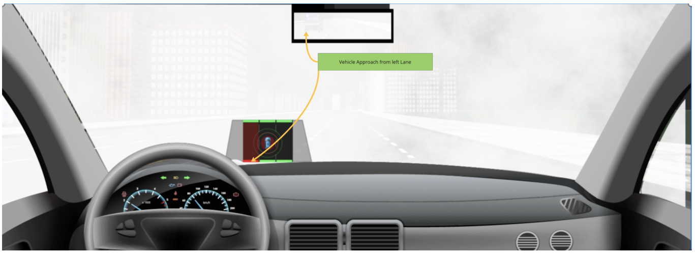
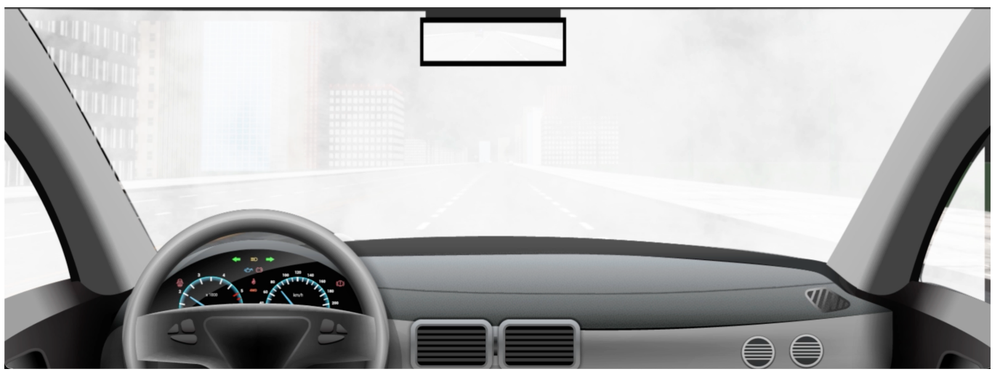

Fog Interface — Results
Key Result
Drivers using visual distance cues showed behavioral trends toward faster reactions, but the difference between conditions was not statistically significant (t-test = 0.16).
With Visual Distance Cues

Abstract bars and vehicle icon communicated relative distance without numeric precision.
Without Visual Cues

Baseline condition relying solely on degraded visual perception in fog.
Design
Between-group
Participants
N = 18
Environment
Lab simulation
Metrics
RT, errors
UX
UEQ